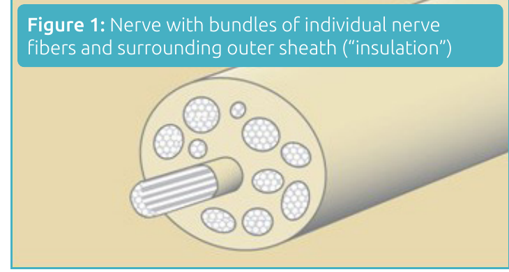

Condition
Nerve Injury
A cut, stretched, or scarred nerve in the hand or arm. Early diagnosis and, when needed, surgical repair give the best chance at full recovery.

Illustration © American Society for Surgery of the Hand
What is a nerve injury?
Nerves are the wires that carry signals between your brain, muscles, and skin. In the hand and arm, the three main nerves are the median, ulnar, and radial; each finger also has its own small digital nerves running along the sides. A nerve can be cut (by a piece of glass or a knife), stretched (by a fall or a dislocation), crushed, or trapped in scar tissue after surgery or injury. When a nerve is damaged, the muscles it powers become weak and the skin it supplies becomes numb or painful.
Common symptoms
- Numbness or tingling in part of the hand
- Weakness or loss of motion in specific muscles (cannot pinch, cannot spread the fingers, cannot lift the wrist)
- Sharp or electric pain along the path of the nerve
- A tender bump that shoots pain when tapped (this can be a neuroma, a scar on the end of a cut nerve)
- Cold intolerance in the affected finger or hand
Why does it happen?
Most nerve injuries are caused by a laceration (glass, knife, saw), a crush, a stretch injury (shoulder dislocation, hard fall), or a pressure injury to a nerve that runs just under the skin. Sometimes a nerve is injured during a previous surgery or scars down to nearby tissue. After a cut, the end of the nerve can form a painful lump called a neuroma.
Treatment options
Non-surgical treatment
- Observation. A bruised or stretched nerve that is still in one piece will often recover on its own over several weeks to months. The arm is monitored with exams and sometimes a nerve test (EMG) to track healing.
- Therapy. Hand therapy keeps the joints moving and the muscles trained so that they are ready when the nerve recovers.
- Desensitization. For painful nerves and neuromas, gentle tapping and texture exposure can calm the nerve down.
Surgical treatment
- Primary nerve repair. A cut nerve is best repaired within 1 to 2 weeks of injury, while the ends are still healthy. The two ends are lined up under a microscope and sewn together with very fine stitches.
- Nerve graft or conduit. If the two ends cannot be brought together without tension, a small piece of a less-important nerve from the leg (nerve graft) or a processed tube (conduit or allograft) is used to bridge the gap.
- Nerve transfer. For high injuries where the nerve cannot reach its muscle in time, a healthy nerve nearby is rewired to power the important muscle, which speeds recovery.
- Neuroma surgery. A painful neuroma can be removed and the end of the nerve either reattached to a muscle (TMR) or tucked into bone or a small nerve wrap to stop it from becoming painful again.
What to expect at your visit
Dr. Barrera will map out which nerve is affected by testing specific muscles and areas of skin, and by tapping along the nerve (Tinel's sign). An EMG and nerve conduction study is often ordered to see exactly where the nerve is injured and how badly. Recovery from nerve surgery is slow: nerves regrow at about one inch per month, so improvement is measured over many months.
Call us if you have numbness or weakness in the hand after a cut, a fall, or a dislocation that has not improved in 2 to 3 weeks, or if you develop a tender lump that shoots pain when tapped. Sooner evaluation gives more treatment options.
Related
Questions?
Call your office location for non-urgent questions:
- NYU Langone Laurelton · 646-501-4950
- NYU Orthopedic, Woodside · 929-429-3222
- NYU Orthopedic, Richmond Hill · 718-206-6923
- Jamaica Hospital Ambulatory Care Center (ACC) · 718-301-0720
See our office contact information for addresses and fax numbers.